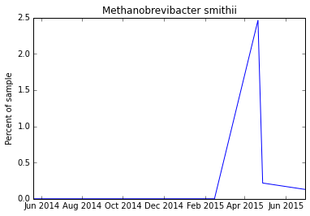
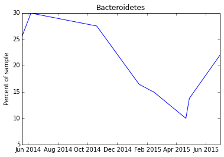

Python 3.4.3 |Anaconda 2.3.0 (x86_64)| (default, Mar 6 2015, 12:07:41)
Type "copyright", "credits" or "license" for more information.
IPython 3.2.0 -- An enhanced Interactive Python.
Anaconda is brought to you by Continuum Analytics.
Please check out: http://continuum.io/thanks and https://anaconda.org
? -> Introduction and overview of IPython's features.
%quickref -> Quick reference.
help -> Python's own help system.
object? -> Details about 'object', use 'object??' for extra details.
%guiref -> A brief reference about the graphical user interface.
In [1]: runfile('/Users/sprague/OneDrive/Projects/uBiome/spyderubiome/ubiomeScratch.py', wdir='/Users/sprague/OneDrive/Projects/uBiome/spyderubiome')
uBiomeCompare loaded as a module

In [2]: plotTaxa("Bacteroidetes")

In [3]: